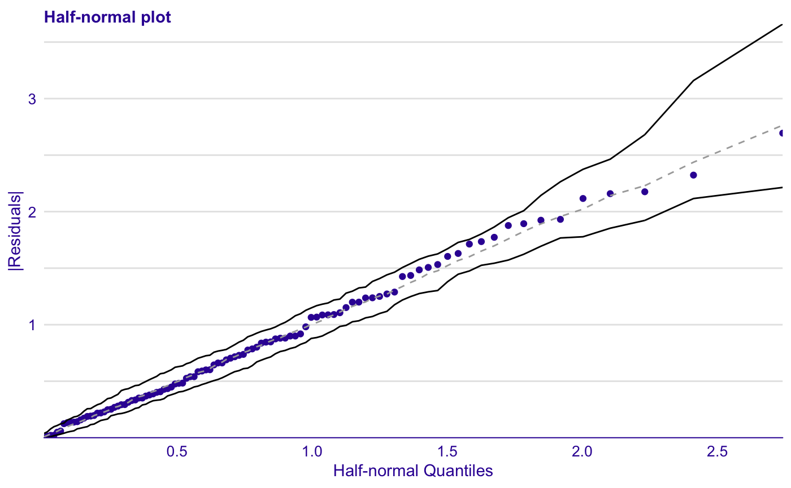

Half-Normal Score
Score is approximately: \( \sum{\#[res_i \leq simres_{i,j}] - n } \) with the distinction that each element of sum is also scaled to take values from [0,1].
\(res_i\) is a residual for i-th observation, \(simres_{i,j}\) is the residual of j-th simulation for i-th observation, and \(n\) is the number of simulations for each observation. Scores are calculated on the basis of simulated data, so they may differ between function calls.
scoreHalfNormal(object, ...)
Arguments
| object | modelAudit or modelFit object. |
|---|---|
| ... | Extra arguments passed to hnp. |
Examples
library(car) lm_model <- lm(prestige~education + women + income, data = Prestige) lm_au <- audit(lm_model, data = Prestige, y = Prestige$prestige) plotHalfNormal(lm_au)#> Gaussian model (lm object)